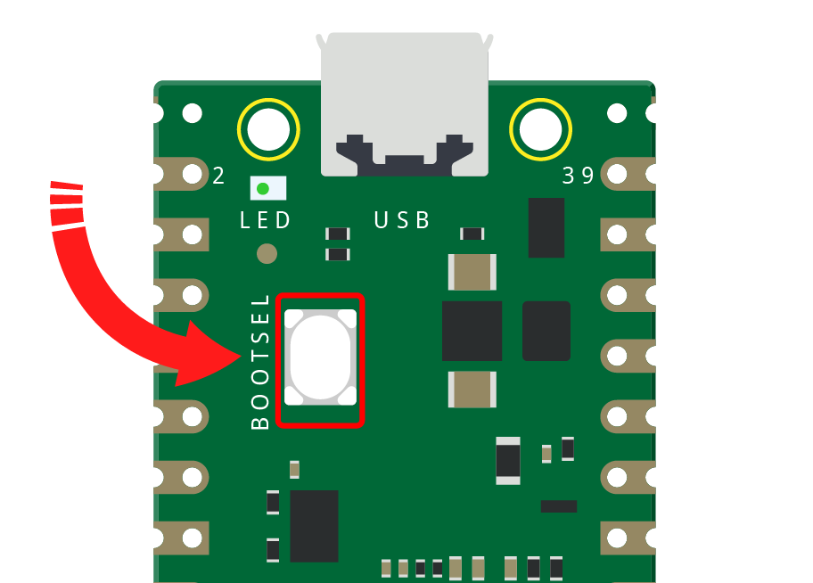
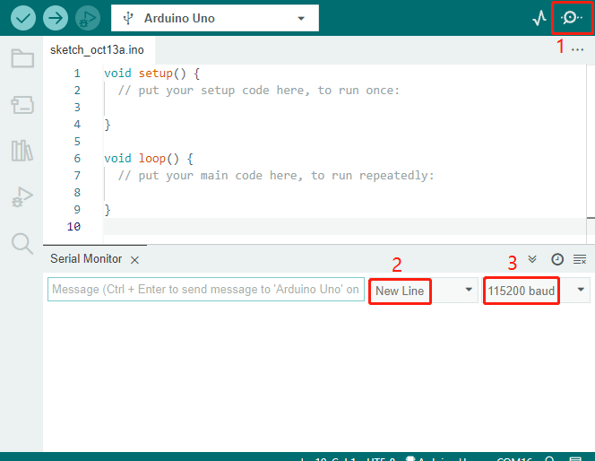

Note
Hello, welcome to the SunFounder Raspberry Pi & Arduino & ESP32 Enthusiasts Community on Facebook! Dive deeper into Raspberry Pi, Arduino, and ESP32 with fellow enthusiasts.
Why Join?
Expert Support: Solve post-sale issues and technical challenges with help from our community and team.
Learn & Share: Exchange tips and tutorials to enhance your skills.
Exclusive Previews: Get early access to new product announcements and sneak peeks.
Special Discounts: Enjoy exclusive discounts on our newest products.
Festive Promotions and Giveaways: Take part in giveaways and holiday promotions.
üëâ Ready to explore and create with us? Click [here] and join today!
FAQ¶
Arduino¶
- Code upload failed in Arduino IDE?
Check that your Pico is correctly recognised by the Arduino IDE, the port should be COMXX (Raspberry Pi Pico), for instructions please refer to 1.3 Setting Up the Raspberry Pi Pico (Important).
Check that the Board(Raspberry Pi Pico) or port（COMXX (Raspberry Pi Pico)）is selected correctly.
If your code is OK and you have selected the correct board and port, but the upload is still not successful. At this point you can click on the Upload icon again, when the progress below shows “Upload…”, unplug the USB cable, then press and hold the BOOTSEL button to plug it in and the code will be uploaded successfully.
MicroPython¶
- How to open and run the code?
For detailed tutorials, please refer to Open and Run Code Directly.
- How to upload library to Raspberry Pi Pico？
For detailed tutorials, please refer to Upload the Libraries to Pico.
- NO MicroPython(Raspberry Pi Pico) Interpreter Option on Thonny IDE?
Check that your Pico is plugged into your computer via a USB cable.
Check that you have installed MicroPython for Pico (1.3 Install MicroPython Firmware on Your Pico).
The Raspberry Pi Pico interpreter is only available in version 3.3.3 or higher version of Thonny. If you are running an older version, please update (1.2 Install and Introduce Thonny IDE).
Plug in/out the micro USB cable sveral times.
- Cannot open Pico code or save code to Pico via Thonny IDE?
Check that your Pico is plugged into your computer via a USB cable.
Check that you have selected the Interpreter as MicroPython (Raspberry Pi Pico).
- Can Raspberry Pi Pico be used on Thonny and Arduino at the same time?
NO, you need to do some different operations.
If you used it on Arduino first, and now you want to use it on Thonny IDE, you need to 1.3 Install MicroPython Firmware on Your Pico on it.
If you used it on Thonny first， and now you want to use it on Arduino IDE, you need to 1.3 Setting Up the Raspberry Pi Pico (Important).
- If your computer is win7 and pico cannot be detected.
Download the USB CDC driver from http://aem-origin.microchip.com/en-us/mindi-sw-library?swsearch=Atmel%2520USB%2520CDC%2520Virtual%2520COM%2520Driver
Unzip the
amtel_devices_cdc.inffile to a folder namedpico-serial.Change the name of
amtel_devices_cdc.inffile topico-serial.inf.Open/edit the
pico-serial.infin a basic editor like notepadRemove and replace the lines under the following headings:
[DeviceList] %PI_CDC_PICO%=DriverInstall, USB\VID_2E8A&PID_0005&MI_00 [DeviceList.NTAMD64] %PI_CDC_PICO%=DriverInstall, USB\VID_2E8A&PID_0005&MI_00 [DeviceList.NTIA64] %PI_CDC_PICO%=DriverInstall, USB\VID_2E8A&PID_0005&MI_00 [DeviceList.NT] %PI_CDC_PICO%=DriverInstall, USB\VID_2E8A&PID_0005&MI_00 [Strings] Manufacturer = "ATMEL, Inc." PI_CDC_PICO = "Pi Pico Serial Port" Serial.SvcDesc = "Pi Pico Serial Driver"
Close and save and make sure your retain the name as pico-serial.inf
Go to your pc device list, find the pico under Ports, named something like CDC Device. A yellow exclamation mark indicates it.
Right click on the CDC Device and update or install driver choosing the file you created from the location you saved it at.
Piper Make¶
- How to set up the Pico on Piper Make?
For detailed tutorials, please refer to 1.1 Set up the Pico.
- How to download or import code?
For detailed tutorials, please refer to 1.3 How to Save or Import Code?.
- How to connect to Pico?
For detailed tutorials, please refer to 2. Connect to Pico.
How to re-burn the firmware for ESP8266 module?¶
1. Download firmwre and burn-in tool
After unzipping, you will see 3 files.

esp8266-uart-wsserver-v1.0.2.bin: The firmware to burn to the ESP8266 module.esptool.exe: This is a command-line utility for Windows.install.bat: This is the command package for Windows system, double click this file will run all the commands inside the file.picoprobe.uf2: This file allows a Pico to act as a USB → SWD and UART converter.
2. Set Pico as a USB → SWD and UART converter
Hold down the BOOTSEL button and connect the Pico to your computer with a Micro USB cable.

Once your Pico is mounted as a Mass Storage Device called RPI-RP2, release the BOOTSEL button.
Go to the Downloads folder and find the file you just downloaded, then drag
picoprobe.uf2to the RPI-RP2 storage drive.The Pico will reboot and disappear from the File Manager, then Pico’s USB will be recognized as a serial port and you can see it in the Device Manager.
Replug the Raspberry Pi Pico (without holding down the BOOTSEL button) to get ready for the next steps.
3. Build the circuit
Connect ESP8266 module and Raspberry Pi Pico.
{kind=link}
4. Burn the firmware
Follow the steps below to burn the firmware if you are using Windows.
Double click
install.batto start the firmware burning. If you see the following prompt, the firmware has been installed successfully.Note
If the burn-in fails, please check the following points.
If it does not work the first time, close the window and open
install.batagain.Reset the ESP8266 module by inserting the RST to GND and then unplugging it.
Check if the wiring is correct.
Make sure the port is not occupied.
To burn the firmware, follow these steps if you are using a Mac OS system.
Use the following commands to install Esptool. Esptool is a Python-based, open-source, platform-independent utility to communicate with the ROM bootloader in Espressif chips.
python3 -m pip install --upgrade pip python3 -m pip install esptool
If esptool is properly installed, it will output a message such as [usage: esptool] if you run
python3 -m esptool.Open a terminal and use the
cdcommand to go into the firmware folder you just downloaded, then run the following command to erase the existing firmware and re-burn the new firmware.esptool.exe --chip esp8266 --before no_reset_no_sync erase_flash esptool.exe --chip esp8266 --before no_reset_no_sync write_flash 0 "esp8266-uart-wsserver-v1.0.2.bin"
If you get the prompt message like this, the firmware is burned successfully.
Note
If the burn-in fails, please check the following points.
Reset the ESP8266 module by inserting the RST to GND and then unplugging it.
Check if the wiring is correct.
Make sure the port is not occupied.
5. Test after burning firmware
Note
If you confirm that the firmware has been burned successfully and you don’t want to test it again, you can also go ahead and finish the project - 1.1 First-time Use the APP.
The Raspberry Pi Pico here uses the serial firmware, you need to 1.3 Install MicroPython Firmware on Your Pico before you can run the MicroPython script.
On the basis of the original wiring, leave IO0 and RST hanging.
As Thonny doesn’t come with a serial port tool, you’ll need to use the Arduino IDE’s serial monitor or another serial port tool to test it. The Arduino IDE 2.0 will be used here, open it and select the port. Note that your port is different from mine.
Click on the Serial Monitor icon to open it and select the display mode (New line) and baud rate (115200 baud).
Type
SET+RESET, and pressCtrl+Enterto send this command. Once the firmware has been burned successfully, you will see a string of characters + OK.At this point you can go ahead and finish the project - 1.1 First-time Use the APP.
Note
The Raspberry Pi Pico here uses the serial firmware, you need to 1.3 Install MicroPython Firmware on Your Pico before you can run the MicroPython script.